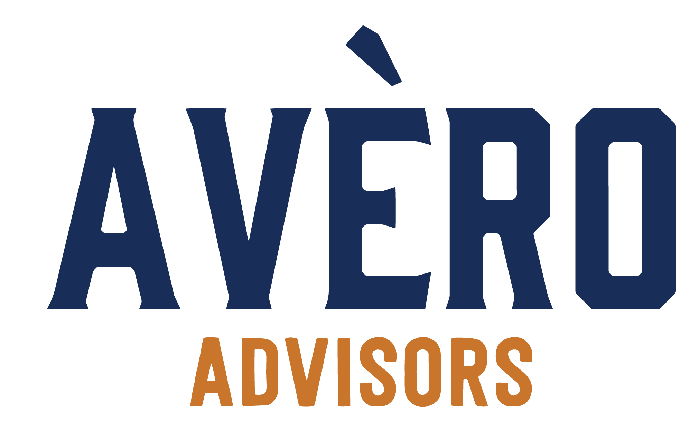

<!DOCTYPE html>
<html lang="en">
<head>
  <meta charset="UTF-8" />
  <meta name="viewport" content="width=device-width, initial-scale=1.0" />
  <title>Government AI Navigator™ | Avero Advisors</title>
  <meta name="description" content="Three lenses every government leader needs before investing in AI. Independent analysis of 17 tools across readiness, impact, and independence." />
  <meta property="og:title" content="Government AI Navigator™ | Avero Advisors" />
  <meta property="og:description" content="Independent analysis of 17 AI tools for government leaders." />
  <meta property="og:type" content="website" />
  <meta name="twitter:card" content="summary_large_image" />
  <link rel="preconnect" href="https://fonts.googleapis.com" />
  <link href="https://fonts.googleapis.com/css2?family=DM+Sans:wght@400;500;600;700;800;900&display=swap" rel="stylesheet" />
  <script crossorigin src="https://unpkg.com/react@18/umd/react.production.min.js"></script>
  <script crossorigin src="https://unpkg.com/react-dom@18/umd/react-dom.production.min.js"></script>
  <script crossorigin src="https://unpkg.com/@babel/standalone/babel.min.js"></script>
  <style>
    *, *::before, *::after { margin: 0; padding: 0; box-sizing: border-box; }
    html, body, #root { min-height: 100vh; }
    body { font-family: 'DM Sans', 'Segoe UI', system-ui, sans-serif; background: #0B1120; }
    ::-webkit-scrollbar { width: 6px; }
    ::-webkit-scrollbar-track { background: #0B1120; }
    ::-webkit-scrollbar-thumb { background: #1E293B; border-radius: 3px; }
  </style>
  <script src="https://js.hsforms.net/forms/embed/24211389.js" defer></script>
  </head>
<body>
  <div id="root"></div>
  <script type="text/babel">
    const { useState } = React;
    const COLORS = {
      bg: "#0B1120", card: "#111827", cardHover: "#1a2236", accent: "#3B82F6",
      accentGlow: "rgba(59, 130, 246, 0.15)", green: "#10B981", amber: "#F59E0B",
      red: "#EF4444", purple: "#8B5CF6", text: "#E5E7EB", muted: "#9CA3AF",
      border: "#1E293B", q1: "#10B981", q2: "#3B82F6", q3: "#F59E0B", q4: "#EF4444",
    };
    const quadrants = [
      {
        id: "readiness",
        title: "Quadrant 1: Readiness × Capability",
        subtitle: '"Can I buy it and what does it do?"',
        xLabel: "Government Readiness →",
        yLabel: "↑ Capability Depth",
        xDesc: "FedRAMP status, procurement vehicles, compliance, gov references",
        yDesc: "Narrow/single-use → Broad transformative platform",
        labels: {
          tl: { name: "High Potential, High Risk", desc: "Powerful but procurement headaches" },
          tr: { name: "Government-Ready Leaders", desc: "Strong capability + easy to procure" },
          bl: { name: "Emerging Bets", desc: "Early stage, unproven in gov" },
          br: { name: "Safe but Limited", desc: "Easy to buy but narrow use" },
        },
        tools: [
          { name: "Microsoft Copilot", x: 82, y: 85, category: "GenAI/Copilot", note: "FedRAMP High, M365 GCC integration, 2.3M+ fed users" },
          { name: "Google Gemini", x: 78, y: 80, category: "GenAI/Copilot", note: "First GenAI FedRAMP High (Mar 2025), Workspace integration" },
          { name: "Anthropic Claude", x: 70, y: 78, category: "GenAI/LLM", note: "FedRAMP High via AWS/GCP, growing gov adoption" },
          { name: "OpenAI ChatGPT", x: 65, y: 82, category: "GenAI/LLM", note: "Via Azure Gov FedRAMP, 90K+ gov users" },
          { name: "ServiceNow Gov", x: 80, y: 75, category: "Workflow/ITSM", note: "OneGov GSA deal, 70% discounts, strong fed presence" },
          { name: "Salesforce GovCloud", x: 76, y: 72, category: "CRM/Platform", note: "Missionforce launch, US Army contract win" },
          { name: "Tyler Technologies", x: 90, y: 55, category: "Gov ERP", note: "44K+ installations, pure-play gov, AI partnerships" },
          { name: "Oracle Cloud Gov", x: 75, y: 70, category: "ERP/Cloud", note: "Sovereign cloud, IL5 authorized, FedRAMP" },
          { name: "SAP (Joule AI)", x: 60, y: 68, category: "ERP/AI", note: "S/4HANA Cloud AI, strong enterprise but limited gov-specific" },
          { name: "Workday AI", x: 72, y: 65, category: "HCM/Finance", note: "Strong in large gov HCM, AI for workforce planning" },
          { name: "AWS Bedrock", x: 80, y: 70, category: "AI Platform", note: "GovCloud, multi-model access, FedRAMP High" },
          { name: "Granicus GXA", x: 85, y: 45, category: "Citizen Engagement", note: "Purpose-built gov, AI digital agents, 27+ data scientists" },
          { name: "Citibot", x: 80, y: 30, category: "Citizen Engagement", note: "Gov-only AI chatbot, SMS/web, Carahsoft distribution" },
          { name: "Polco AI (Polly)", x: 78, y: 35, category: "Citizen Engagement", note: "Purpose-built local gov, 500+ gov clients, ICMA grounded" },
          { name: "Accela", x: 75, y: 40, category: "Gov Platform", note: "Permitting/licensing AI, cloud-native, growing" },
          { name: "OpenGov", x: 73, y: 42, category: "Gov Platform", note: "Budgeting/planning AI, procurement workflows" },
          { name: "CGI Advantage", x: 74, y: 58, category: "Gov ERP", note: "Federal/state ERP, 91K employees, AI integration" },
        ],
      },
      {
        id: "impact",
        title: "Quadrant 2: Complexity × Impact",
        subtitle: '"What will it take and what will I get?"',
        xLabel: "Implementation Complexity →",
        yLabel: "↑ Mission Impact",
        xDesc: "Plug-and-play → Deep integration & change management required",
        yDesc: "Operational efficiency → Citizen outcome transformation",
        labels: {
          tl: { name: "Quick Wins", desc: "High impact, fast deployment" },
          tr: { name: "Strategic Transformers", desc: "High impact but major investment" },
          bl: { name: "Easy Adds", desc: "Simple to deploy, incremental value" },
          br: { name: "Heavy Lifts", desc: "Complex to implement, limited payoff" },
        },
        tools: [
          { name: "Microsoft Copilot", x: 35, y: 70, category: "GenAI/Copilot", note: "Integrates into existing M365, moderate change mgmt" },
          { name: "Google Gemini", x: 38, y: 65, category: "GenAI/Copilot", note: "Workspace integration, training required" },
          { name: "Anthropic Claude", x: 30, y: 55, category: "GenAI/LLM", note: "API-first, relatively easy integration" },
          { name: "OpenAI ChatGPT", x: 25, y: 55, category: "GenAI/LLM", note: "Consumer-friendly, fast to deploy" },
          { name: "ServiceNow Gov", x: 60, y: 75, category: "Workflow/ITSM", note: "Significant workflow redesign, high operational impact" },
          { name: "Salesforce GovCloud", x: 65, y: 72, category: "CRM/Platform", note: "CRM transformation, citizen case mgmt impact" },
          { name: "Tyler Technologies", x: 80, y: 80, category: "Gov ERP", note: "Full ERP implementation, transforms operations" },
          { name: "Oracle Cloud Gov", x: 88, y: 78, category: "ERP/Cloud", note: "Complex cloud migration, broad operational impact" },
          { name: "SAP (Joule AI)", x: 90, y: 75, category: "ERP/AI", note: "Massive implementation effort, deep process impact" },
          { name: "Workday AI", x: 75, y: 70, category: "HCM/Finance", note: "Major HCM transformation, workforce impact" },
          { name: "AWS Bedrock", x: 55, y: 60, category: "AI Platform", note: "Requires developer resources, flexible impact" },
          { name: "Granicus GXA", x: 30, y: 60, category: "Citizen Engagement", note: "CMS integration, direct citizen impact" },
          { name: "Citibot", x: 15, y: 40, category: "Citizen Engagement", note: "Very easy SMS setup, immediate 311 impact" },
          { name: "Polco AI (Polly)", x: 20, y: 45, category: "Citizen Engagement", note: "Quick deployment, community engagement impact" },
          { name: "Accela", x: 55, y: 50, category: "Gov Platform", note: "Permitting workflow setup, citizen-facing impact" },
          { name: "OpenGov", x: 45, y: 48, category: "Gov Platform", note: "Budget integration, transparency impact" },
          { name: "CGI Advantage", x: 82, y: 72, category: "Gov ERP", note: "Full ERP deployment, operational transformation" },
        ],
      },
      {
        id: "independence",
        title: "Quadrant 3: Independence × Maturity",
        subtitle: '"Am I getting locked in?"',
        xLabel: "Vendor Independence →",
        yLabel: "↑ Gov Market Maturity",
        xDesc: "Proprietary/locked-in → Open/interoperable ecosystem",
        yDesc: "Emerging/unproven → Established/deployed at scale in gov",
        labels: {
          tl: { name: "Established but Locked", desc: "Proven but hard to leave" },
          tr: { name: "Open & Proven", desc: "Mature with exit flexibility" },
          bl: { name: "Risky Bets", desc: "New and proprietary" },
          br: { name: "Flexible but Unproven", desc: "Open but limited gov track record" },
        },
        tools: [
          { name: "Microsoft Copilot", x: 25, y: 85, category: "GenAI/Copilot", note: "Deep M365 lock-in, extremely mature in gov" },
          { name: "Google Gemini", x: 35, y: 70, category: "GenAI/Copilot", note: "Workspace dependency, growing gov presence" },
          { name: "Anthropic Claude", x: 70, y: 50, category: "GenAI/LLM", note: "Multi-cloud, API-standard, newer to gov" },
          { name: "OpenAI ChatGPT", x: 40, y: 65, category: "GenAI/LLM", note: "Azure dependency, strong adoption momentum" },
          { name: "ServiceNow Gov", x: 30, y: 80, category: "Workflow/ITSM", note: "Platform lock-in, very established in fed" },
          { name: "Salesforce GovCloud", x: 28, y: 78, category: "CRM/Platform", note: "CRM ecosystem lock-in, long gov history" },
          { name: "Tyler Technologies", x: 20, y: 88, category: "Gov ERP", note: "Proprietary/closed ecosystem, 13K locations" },
          { name: "Oracle Cloud Gov", x: 30, y: 82, category: "ERP/Cloud", note: "Oracle ecosystem, deep gov entrenchment" },
          { name: "SAP (Joule AI)", x: 32, y: 80, category: "ERP/AI", note: "SAP ecosystem lock-in, massive gov installed base" },
          { name: "Workday AI", x: 35, y: 72, category: "HCM/Finance", note: "Moderate lock-in, strong in large gov HCM" },
          { name: "AWS Bedrock", x: 55, y: 75, category: "AI Platform", note: "Multi-model but AWS infrastructure dependency" },
          { name: "Granicus GXA", x: 40, y: 75, category: "Citizen Engagement", note: "Gov-specific platform, established but niche" },
          { name: "Citibot", x: 60, y: 40, category: "Citizen Engagement", note: "Lightweight integration, newer market entrant" },
          { name: "Polco AI (Polly)", x: 58, y: 48, category: "Citizen Engagement", note: "Interoperable, 500+ gov clients" },
          { name: "Accela", x: 55, y: 55, category: "Gov Platform", note: "API-first approach, mid-market presence" },
          { name: "OpenGov", x: 58, y: 52, category: "Gov Platform", note: "Cloud-native, interoperable, growing adoption" },
          { name: "CGI Advantage", x: 25, y: 75, category: "Gov ERP", note: "Proprietary, long-standing fed/state presence" },
        ],
      },
    ];
    const categoryColors = {
      "GenAI/Copilot": "#3B82F6", "GenAI/LLM": "#6366F1", "AI Platform": "#8B5CF6",
      "Workflow/ITSM": "#14B8A6", "CRM/Platform": "#06B6D4", "Gov ERP": "#F59E0B",
      "ERP/Cloud": "#F97316", "ERP/AI": "#FB923C", "HCM/Finance": "#FBBF24",
      "Citizen Engagement": "#10B981", "RPA/Automation": "#EC4899", "Data/Analytics": "#A78BFA",
      "Cybersecurity AI": "#EF4444", "Gov Platform": "#22D3EE", "Identity/Fraud": "#F472B6",
      "Enterprise AI": "#818CF8", "Analytics/AI": "#C084FC",
    };
    const QuadrantChart = ({ quadrant, hoveredTool, setHoveredTool }) => {
      const { labels, tools, xLabel, yLabel } = quadrant;
      const pad = 48;
      const w = 520;
      const h = 420;
      const plotW = w - pad * 2;
      const plotH = h - pad * 2;
      return (
        <svg viewBox={`0 0 ${w} ${h}`} style={{ width: "100%", height: "auto", overflow: "visible" }}>
          <rect x={pad} y={pad} width={plotW / 2} height={plotH / 2} fill="rgba(59,130,246,0.06)" rx="4" />
          <rect x={pad + plotW / 2} y={pad} width={plotW / 2} height={plotH / 2} fill="rgba(16,185,129,0.06)" rx="4" />
          <rect x={pad} y={pad + plotH / 2} width={plotW / 2} height={plotH / 2} fill="rgba(239,68,68,0.04)" rx="4" />
          <rect x={pad + plotW / 2} y={pad + plotH / 2} width={plotW / 2} height={plotH / 2} fill="rgba(245,158,11,0.05)" rx="4" />
          <text x={pad + plotW * 0.25} y={pad + 18} textAnchor="middle" fill="#60A5FA" fontSize="9" fontWeight="600" opacity="0.7">{labels.tl.name}</text>
          <text x={pad + plotW * 0.75} y={pad + 18} textAnchor="middle" fill="#34D399" fontSize="9" fontWeight="600" opacity="0.7">{labels.tr.name}</text>
          <text x={pad + plotW * 0.25} y={pad + plotH - 8} textAnchor="middle" fill="#F87171" fontSize="9" fontWeight="600" opacity="0.7">{labels.bl.name}</text>
          <text x={pad + plotW * 0.75} y={pad + plotH - 8} textAnchor="middle" fill="#FBBF24" fontSize="9" fontWeight="600" opacity="0.7">{labels.br.name}</text>
          <line x1={pad + plotW / 2} y1={pad} x2={pad + plotW / 2} y2={pad + plotH} stroke="#334155" strokeWidth="1" strokeDasharray="4 4" />
          <line x1={pad} y1={pad + plotH / 2} x2={pad + plotW} y2={pad + plotH / 2} stroke="#334155" strokeWidth="1" strokeDasharray="4 4" />
          <text x={pad + plotW / 2} y={h - 4} textAnchor="middle" fill="#94A3B8" fontSize="10" fontWeight="500">{xLabel}</text>
          <text x={12} y={pad + plotH / 2} textAnchor="middle" fill="#94A3B8" fontSize="10" fontWeight="500" transform={`rotate(-90, 12, ${pad + plotH / 2})`}>{yLabel}</text>
          {tools.map((tool, i) => {
            const cx = pad + (tool.x / 100) * plotW;
            const cy = pad + plotH - (tool.y / 100) * plotH;
            const isHovered = hoveredTool === tool.name;
            const color = categoryColors[tool.category] || "#9CA3AF";
            return (
              <g key={i} onMouseEnter={() => setHoveredTool(tool.name)} onMouseLeave={() => setHoveredTool(null)} style={{ cursor: "pointer" }}>
                {isHovered && <circle cx={cx} cy={cy} r="16" fill={color} opacity="0.15" />}
                <circle cx={cx} cy={cy} r={isHovered ? 6 : 4.5} fill={color} stroke={isHovered ? "#fff" : "none"} strokeWidth="1.5" opacity={hoveredTool && !isHovered ? 0.3 : 1} />
                {isHovered && (
                  <g>
                    <rect x={cx - 90} y={cy - 52} width="180" height="40" rx="6" fill="#1E293B" stroke={color} strokeWidth="1" />
                    <text x={cx} y={cy - 37} textAnchor="middle" fill="#F1F5F9" fontSize="9" fontWeight="700">{tool.name}</text>
                    <text x={cx} y={cy - 24} textAnchor="middle" fill="#94A3B8" fontSize="7.5">{tool.note.slice(0, 45)}{tool.note.length > 45 ? "..." : ""}</text>
                  </g>
                )}
              </g>
            );
          })}
        </svg>
      );
    };
    const ToolRow = ({ tool, isHovered, onHover, onLeave }) => {
      const color = categoryColors[tool.category] || "#9CA3AF";
      return (
        <div onMouseEnter={onHover} onMouseLeave={onLeave} style={{
          display: "flex", alignItems: "center", gap: "8px", padding: "6px 10px", borderRadius: "6px",
          background: isHovered ? "rgba(59,130,246,0.08)" : "transparent", transition: "background 0.15s", cursor: "pointer",
        }}>
          <div style={{ width: "8px", height: "8px", borderRadius: "50%", background: color, flexShrink: 0 }} />
          <span style={{ fontSize: "12px", fontWeight: "600", color: "#E2E8F0", minWidth: "120px" }}>{tool.name}</span>
          <span style={{ fontSize: "10px", color: "#64748B", padding: "1px 6px", background: "#1E293B", borderRadius: "4px" }}>{tool.category}</span>
        </div>
      );
    };
    function GovernmentAINavigator() {
      const [activeQuadrant, setActiveQuadrant] = useState(0);
      const [hoveredTool, setHoveredTool] = useState(null);
      const q = quadrants[activeQuadrant];
      const allCategories = [...new Set(q.tools.map(t => t.category))].sort();
      return (
        <div style={{
          background: "linear-gradient(135deg, #0B1120 0%, #111827 50%, #0F172A 100%)",
          minHeight: "100vh", color: "#E5E7EB", fontFamily: "'DM Sans', 'Segoe UI', system-ui, sans-serif", padding: "0",
        }}>
          {/* Header */}
          <div style={{ padding: "32px 32px 24px", borderBottom: "none", background: "linear-gradient(180deg, #F5F0E8 0%, #D4C4A8 15%, #6B5A3E 35%, #1E2A3E 60%, #0B1120 100%)" }}>
            <div style={{ display: "flex", alignItems: "center", gap: "16px", marginBottom: "8px" }}>
              
              <div style={{ width: "1px", height: "48px", background: "#1B2A4A" }}></div>
              <h1 style={{
                fontSize: "22px", fontWeight: "800", margin: "0",
                color: "#1B2A4A",
                letterSpacing: "0.5px",
              }}>Government AI Navigator™</h1>
            </div>
            <p style={{ fontSize: "13px", color: "#4A5568", margin: "8px 0 0 0", maxWidth: "600px", lineHeight: "1.5" }}>
              Three lenses every government leader needs before investing in AI. Independent analysis of 17 tools across readiness, impact, and independence.
            </p>
          </div>
          {/* Quadrant Tabs */}
          <div style={{ display: "flex", gap: "4px", padding: "16px 32px", overflowX: "auto" }}>
            {quadrants.map((q, i) => (
              <button key={q.id} onClick={() => { setActiveQuadrant(i); setHoveredTool(null); }} style={{
                padding: "10px 16px", borderRadius: "8px",
                border: activeQuadrant === i ? "1px solid #3B82F6" : "1px solid #1E293B",
                background: activeQuadrant === i ? "rgba(59,130,246,0.1)" : "transparent",
                color: activeQuadrant === i ? "#60A5FA" : "#64748B",
                fontSize: "12px", fontWeight: "600", cursor: "pointer", whiteSpace: "nowrap", transition: "all 0.2s",
              }}>
                <span style={{ fontSize: "14px", marginRight: "6px" }}>{i === 0 ? "🎯" : i === 1 ? "⚡" : "🔓"}</span>
                {q.subtitle}
              </button>
            ))}
          </div>
          {/* Main Content */}
          <div style={{ padding: "0 32px 32px", display: "flex", gap: "24px", flexWrap: "wrap" }}>
            {/* Chart */}
            <div style={{ flex: "1 1 500px", minWidth: "320px" }}>
              <div style={{ background: "#0F172A", borderRadius: "12px", border: "1px solid #1E293B", padding: "16px" }}>
                <h2 style={{ fontSize: "16px", fontWeight: "700", margin: "0 0 4px 0", color: "#F1F5F9" }}>{q.title}</h2>
                <p style={{ fontSize: "11px", color: "#64748B", margin: "0 0 8px 0" }}>
                  X: {q.xDesc} &nbsp;|&nbsp; Y: {q.yDesc}
                </p>
                <QuadrantChart quadrant={q} hoveredTool={hoveredTool} setHoveredTool={setHoveredTool} />
              </div>
              {/* Avero CTA */}
              <div style={{
                marginTop: "16px", padding: "16px 20px", borderRadius: "10px",
                background: "linear-gradient(135deg, rgba(59,130,246,0.08), rgba(139,92,246,0.08))",
                border: "1px solid rgba(59,130,246,0.2)",
              }}>
                <div style={{ fontSize: "13px", fontWeight: "700", color: "#60A5FA", marginBottom: "4px" }}>
                  ⚠️ Before you buy any of these tools...
                </div>
                <div style={{ fontSize: "12px", color: "#94A3B8", lineHeight: "1.5" }}>
                  Have you completed <span style={{ color: "#F1F5F9", fontWeight: "600" }}>Phase Zero</span>? Independent readiness assessment ensures your AI investment delivers ROI — not regret. Avero Advisors provides vendor-neutral guidance for government technology decisions.
                </div>
              </div>
            </div>
            {/* Tool Directory */}
            <div style={{ flex: "0 1 320px", minWidth: "280px" }}>
              <div style={{ background: "#0F172A", borderRadius: "12px", border: "1px solid #1E293B", padding: "16px", maxHeight: "580px", overflowY: "auto" }}>
                <h3 style={{ fontSize: "13px", fontWeight: "700", margin: "0 0 12px 0", color: "#94A3B8", textTransform: "uppercase", letterSpacing: "1px" }}>
                  Tool Directory ({q.tools.length})
                </h3>
                {allCategories.map(cat => (
                  <div key={cat} style={{ marginBottom: "12px" }}>
                    <div style={{ fontSize: "10px", fontWeight: "700", color: categoryColors[cat], textTransform: "uppercase", letterSpacing: "1px", padding: "0 10px", marginBottom: "4px" }}>
                      {cat}
                    </div>
                    {q.tools.filter(t => t.category === cat).map(tool => (
                      <ToolRow key={tool.name} tool={tool} isHovered={hoveredTool === tool.name} onHover={() => setHoveredTool(tool.name)} onLeave={() => setHoveredTool(null)} />
                    ))}
                  </div>
                ))}
              </div>
              {/* Legend */}
              <div style={{ marginTop: "12px", padding: "12px 16px", borderRadius: "10px", background: "#0F172A", border: "1px solid #1E293B" }}>
                <div style={{ fontSize: "10px", fontWeight: "700", color: "#64748B", textTransform: "uppercase", letterSpacing: "1px", marginBottom: "8px" }}>
                  Quadrant Guide
                </div>
                {Object.entries(q.labels).map(([key, val]) => {
                  const color = key === "tr" ? "#34D399" : key === "tl" ? "#60A5FA" : key === "br" ? "#FBBF24" : "#F87171";
                  return (
                    <div key={key} style={{ display: "flex", gap: "8px", alignItems: "flex-start", marginBottom: "6px" }}>
                      <div style={{ width: "6px", height: "6px", borderRadius: "2px", background: color, marginTop: "4px", flexShrink: 0 }} />
                      <div>
                        <div style={{ fontSize: "11px", fontWeight: "600", color }}>{val.name}</div>
                        <div style={{ fontSize: "10px", color: "#64748B" }}>{val.desc}</div>
                      </div>
                    </div>
                  );
                })}
              </div>
            </div>
          </div>
          {/* Report Download Form */}
          <div style={{
            padding: "40px 32px",
            background: "linear-gradient(135deg, rgba(59,130,246,0.06), rgba(139,92,246,0.06))",
            borderTop: "1px solid #1E293B",
          }}>
            <div style={{
              maxWidth: "640px",
              margin: "0 auto",
              textAlign: "center",
            }}>
              <div style={{ fontSize: "14px", fontWeight: "700", letterSpacing: "2px", color: "#3B82F6", textTransform: "uppercase", marginBottom: "8px" }}>
                Free Download
              </div>
              <h2 style={{
                fontSize: "22px", fontWeight: "800", margin: "0 0 8px 0",
                background: "linear-gradient(135deg, #E2E8F0, #94A3B8)",
                WebkitBackgroundClip: "text", WebkitTextFillColor: "transparent",
              }}>
                Get the Full Government AI Navigator Report
              </h2>
              <p style={{ fontSize: "13px", color: "#64748B", lineHeight: "1.6", margin: "0 0 24px 0" }}>
                Detailed scoring methodology, vendor deep-dives, and actionable procurement guidance for all 17 tools — delivered as a comprehensive PDF.
              </p>
              <div
                className="hs-form-frame"
                data-region="na1"
                data-form-id="172f7965-64e6-448f-b7c9-090efd3722e6"
                data-portal-id="24211389"
              ></div>
            </div>
          </div>

          {/* Footer */}
          <div style={{ padding: "16px 32px", borderTop: "1px solid #1E293B", display: "flex", justifyContent: "space-between", alignItems: "center", flexWrap: "wrap", gap: "8px" }}>
            <div style={{ fontSize: "10px", color: "#475569" }}>© 2026 Avero Advisors. Independent analysis. Not affiliated with any vendor listed.</div>
            <div style={{ fontSize: "10px", color: "#475569" }}>Data as of February 2026 | Positions reflect Avero's independent assessment</div>
          </div>
        </div>
      );
    }
    const root = ReactDOM.createRoot(document.getElementById("root"));
    root.render(<GovernmentAINavigator />);
  </script>
</body>
</html>
